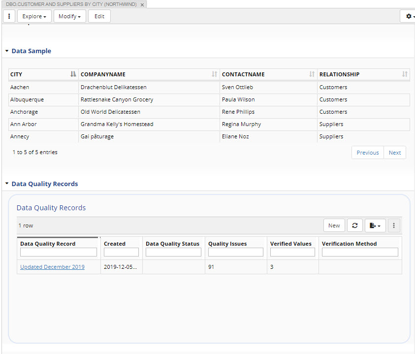

Pencil icon lets you name an asset list.
The above asset list has been named “customer”.
To create another asset list, drag the asset list panel from the panel selection to your window.
Now when you choose to add to an asset list, you will choose which of your two asset lists.
Asset lists are private until shared.
Cloud icon opens a menu that lets you open an existing asset list and share an asset list you create with colleagues who have permissions to this collection.
They will be able to go to “Open an existing Asset List” and find all of the shared asset lists along with their own.
The settings menu lets you configure how information about assets in a list is displayed e.g., whether a person who added it to a list is displayed as a column.
You can modify asset information directly by editing it in an asset collection or you can use Workflows and edit information in the working copy of the collection that is managed by the workflow.
Irrespective of the choice, editing options are the same.
Asset information is modified primarily using the form panel.
Clicking on the Edit button on top of the form opens all fields for editing.
Alternatively, to clicking on the Edit button, users can do inline editing.
Mouse over the area between the field name (e.g., definition) and the field itself.
You will see a pencil icon.
Click on it to start editing one property at the time.
TopBraid EDG supports modular management of information.
You can create resources in one asset collection, then include this collection into another one and add more information about these resources.
The hue of the icon at the top of the form will indicate if that resource is from the selected collection or is included from another collection.
If included from another collection, the icon will be a lighter color.
Further, you will see at the top of the form information about a collection where this resource is defined in.
You will be able to click through to that “defining” collection and modify the resource there.
If you do not go to the defining asset collection and decide to edit an included (or referenced) resource in your current collection:
You will only be able to add information and will not be able to remove or modify any of the information from the included collection.
The changes you make are added to the collection you are currently in, not the collection this resource has come from.
Similarly if you choose to delete an included resource, only the changes you made in that collection will be deleted, not the original resource.
If you want to make changes to the statements that are included, use Explore -> Open in Defining Asset Collection.
This will open the asset in the collection where it was originally created.
Click on the + (plus) sign to the left of the editable field to get a slot for a new value.
Plus sign will appear only if the property could have more than one value. Click on the – (minus) sign to the right of the editable field to remove a value.
For attribute values, you can just type the value.
A convenient picker may appear depending on the datatype e.g., a date.
EDG will protect you from making mistakes.
For example, if a value is supposed to be an integer, you will not be able to enter letters.
Note
A language tag for a string can be selected from the dropdown to the right of the field – if a value is defined as a language tagged string.
The dropdown icon to the left of the delete icon lets you switch to a different edit widget – If multiple types are defined for an attribute e.g., a string or a language string or HTML.
For string values, you will be able to switch between a “text field” (a single line entry field) and a “text area” (a larger text box).
Options shown are determined by the schema (ontology) that defines the asset type.
Start typing the name of the existing resource and pick it from the auto-complete.
Enter the URI of the related asset. The dropdown menu available by clicking on the “v” sign to the right of the field will let you switch between using autocomplete (default) and entering a URI.
Use search to find the resource you want to connect to by clicking on the button directly to the right of the field – as shown below.
Create a new resource by clicking on the button directly to the right of the field – as shown below.
Drag and drop assets from other panels directly into a form.
After at least one change is made, Save Changes button becomes clickable.
If any of the edits presents an issue, the page will display them.
You will have a choice to correct issues prior to saving, cancel edits or save them as-is.
Preview button will display added and deleted statements as well as any issues.
TopBraid EDG Preview of Form Edits for United States
Sometimes, to the left of a field open for editing you will see a + icon surrounded by a square shape.
Clicking on it will open a subform that lets you make statements about property’s value.
For example, you may want to say that a value of a country code or a status has an effective start and an effective end date.
When information shown on the form is a relationship, you can:
Right click to see and use menu options for the related resource.
Click on the dropdown to switch the display to show URI of the related asset instead of its label (in view not in edit mode).
You can also click on Show Details to see the embedded form for the related asset.
Sometimes, a form may display information in tables and/or display generated diagrams.
What to display as a table is defined in the associated ontology models and can be configured.
For example, in the form below for a database table from Northwind you see two tables: one containing data sample (not editable) and one containing records of data quality runs (editable).

TopBraid EDG Data Sample & Data Quality Records Tables
If a value of a property is displayed, but not editable, it means that one of the following is true:
Values for this property are automatically calculated (inferred) by EDG.
Rules for inferring values are defined in the underlying ontologies.
Some values may also be inferred by default, but still editable.
In this case, any user edit overrides system inferences.
Or
Value has been entered in an asset collection that is included in the currently selected collection.
In this case, you will not be able to remove or change the value.
To edit it, you must navigate to the defining asset collection.
If, however, the property can have multiple values, you will able to create additional values for such properties.
Or
Property has been set as “read only” in the underlying ontology.
This may happen if your organization wants to control addition and edits of values for certain properties in the UI e.g., to make such edits possible only through import or APIs or to make them possible only in certain asset collections or to protect users in certain roles from incidentally modifying these values.
The view you will see by default will depend on your role and selections made in the relevant ontology.
If an asset shown on a form has multiple types or different role-based views, it can be viewed and edited using any of these perspectives.
In such cases, you will see a dropdown box at the top right of the form next to the settings menu.
You will also be able to select a Merged view that, for assets that have multiple types, will combine properties of all types.
To do this, select Settings>Merge properties from all suitable view shapes.
Additional Options for Viewing and Modifying Data
Additional options for modifying data in other editors panels are as follows:
Source Code Panel: This is a low-level technical operation and should be only used by users who are well versed in RDF, the underlying data model behind EDG. Your EDG Administrator can disable access to this panel for some of the users.
SPARQL Query Panel Update access must be enabled on the server to modify through SPARQL queries.
You can also modify data through GraphQL in EDG accessible from each collection’s Export tab.
The Forms for classes, SKOS concepts and concept schemes have a section called “Display” where you will find the “hidden” property.
Setting it to “true” will hide these resources from the panels that display tree views – Class Hierarchy panel (in case of classes) and Taxonomy Concepts panel (in case of concepts and concept schemes).
When a parent is hidden in the tree, all its children also disappear from the tree – unless they have another parent.
The Class and Taxonomy Concepts panels have a “ghost” setting to show hidden items.
To do this, select Settings> Also show assets marked as hidden.
Batch Edit is available from the Asset List Panel, Instances Panel and Search Panel.
Where you see the following menu item once you select multiple assets:
The wizard will then let you select properties you want to change and walk you through modifying data using features similar to those of the Editing Assets using Form Panel.
The Source Code panel allows users to view and edit asset data in the Turtle serialization format.
Editing source code is a low level operation for expert users and care should be taken.
Warning
When editing Source Code it is possible to cause damage to the EDG workspace making it unavailable.
An administrator can configure the EDG server to block all edits to source code, which is recommended for organizations without expert users knowledgable about editing Turtle serialization.
The Source Code panel can also be hidden from users in certain roles.
Depending on the situation, one or two two windows appear:
an upper window shows the content of the current graph (asset collection)
if there are included graphs, a second lower window shows their content which is not editable
The upper window lets you edit the current graph data.
You can make changes and click on the Save Changes button.
Save Changes will not be available if editing introduces any syntax errors.
Prefix declarations can be expanded and collapsed.
Do not make changes to prefixes using Source Code panel.
Only ever change them as described in Controlling Namespaces and Prefixes .
The Settings menu option will let you hide statements from an included graph by hiding the relevant window.
These panels show tree views of resources based on any relationships.
Select the root resource type to start the tree.
Use the gold circle icon to the right of the setting icon to make the selection.
This can also be pre-set in the Manage tab.
This panel shows a tree view starting with the currently selected resource, letting you to expand its relationship values as children in the hierarchy.
These children can then be similarly expanded and so on.
This panel checks the content of the asset collection against all of applicable quality rules (i.e., applicable shapes and validity constraints they define).
It also runs enrichment rules to suggest mappings.
Problems and Suggestions panel will raise validation results if values of properties do not comply with the constraints defined in the ontology your data is based on.
Note
RDF, as a flexible graph data model, lets you make statements that were not anticipated e.g., to say something about Person’s eye color even if no property “eye color” is defined for a Person.
Creating such values is not supported by the form-based editing in TopBraid EDG – the forms are entirely driven by what is defined in ontology models.
Yet, it is possible to add values for undefined properties e.g., if you have appropriate permissions, you could use the Source Code panel to add any triple directly in Turtle or you could import RDF containing any kind of triples.
The fact that these triples may be using properties not explicitly defined in the ontology is not a violation of the model.
It will not be flagged by the Problems and Suggestions unless you explicitly say that no values except for the defined properties are allowed.
The Change History Panel will show all captured changes – additions and deletions.
Each change can be expanded to show details.
Added statements are shown in green.
Removed statements are shown in pink.
You can filter displayed changes by selecting a user who made a change, the time period when changes were made, and/or the property (predicate) which values were changed.
To see only changes made to the currently selected asset, click on the “on selected” button.
Changes can also be reverted from the change history panel.
Click to select changes you want to revert and then click on the Undo icon – the first icon in the panel.
Note
This will create an audit trail entry for the revert operation.
Workflows will have a button “from workflow only” to narrow down to only changes made specifically in the current workflow.
In addition to the button that runs rules, the panel provides:
A button to assert all inferred triples.
It will be displayed only once you execute rules and they generate some statements that will be shown in the panel.
Clicking on this button will write the inferred statements into the asset collection.
Until you take this action, generated statements are not stored permanently.
A button that will display all available rules and let you activate and deactivate them for the run.
Note
Rules defined using sh:values are evaluated dynamically and will NOT be shown or executed by the panel.
The screenshot below shows the dialog that will appear when you click on this button.
Settings button. It lets you switch between the display of labels and URIs and between the tabular display of the inferred statements and display in the Turtle format (source code).
It also lets you control the number of iterations.
If you expect your rules to produce a large number of triple statements, we recommend that you run them by using the option available in the Transform tab.
The role of Inferences panel is primarily to help you with testing rules as you develop them.
This panel will show a table of instances of a selected class i.e., resources with the type corresponding to the selected class.
The free text search field at the top of the panel lets you filter the list.
The panel also has New button for creation of new assets of selected type.
Settings menu has further options governing what and how is shown.
The first column of the table is a check box.
If you select multiple assets, you will be able to use the “batch actions menu” at the top right to perform the same bulk operations as those available in the Assets List panel.
References panel displays all assets that refer to the currently selected asset (in the form or one of the other panels).
For each referring asset, you will see its label and the referring relationship.
If you click on one of the referring assets, it gets selected on the form, in the hierarchical panels, etc.
Then, in turn, what is shown in the References panel will change.
If you want to avoid this from happening, select the “pin” option under the Settings (gear) menu.
This will prevent the contents of the Reference panel from changing as you click around.
In EDG, every asset is a member of at least one class.
This panel displays hierarchy of classes starting with a selected root.
Hierarchical relationship between classes is rdfs:subClassOf.
Class information is only editable if you are in an Ontology.
In other collection types you will only be able to view class information.
While EDG will declare all new Classes also as Node Shapes.
It also also supports creation of Node Shapes that are not Classes which may be useful when creating an alternative view of class members or when creating a shape that will be used in other shapes, for example, as part of logical expressions.
The Node Shapes Panel displays ONLY node shapes that are not Classes and supports creation of such shapes.
The Property Groups Panel displays properties associated with a selected class or a node shape.
Properties are displayed organized into groups, reflecting how they would be shown on a form.
This panel will display only assets that are defined in the current asset collection.
Assets from included collections will not be shown.
There is a Search field to filter results and check boxes for selection.
You can then use the “More” button in the upper left of the panel to execute operations on selected assets.
This panel will list any crosswalks that map the current asset collection to another collection. Y
ou will be able to access crosswalk mappings from this panel.
You will also be able to create new crosswalks.
Taxonomies collections include a Taxonomy Concepts Panel which displays taxonomy concepts organized into concept schemes.
It also lets you create new concepts and schemes.
Right clicking on an asset displayed in any panel brings up an action menu providing access to asset actions.
Some of the actions are ungrouped and available directly from the right click.
Show any workflows that contain changes to the selected asset
See and enter comments about the asset
See and create tasks for the asset
Select a number of diagrams and visualizations – available options depend on the type of the asset
Add and view endorsements.
Endorsements will be recorded as activity in the what’s happening section of EDG home page, viewable in the form panel and in Search the EDG.
The Modify menu actions are only available if a user has editor privileges for an asset collection.
Clone and replace actions are available for all assets.
Delete action is available for assets that are defined in the current asset collection.
Other available actions will differ based on the type of the asset and collection.
Clone and Replace operations are available under the Modify menu.
Clone creates a copy of the selected Asset.
The label of the clone (preferred label in case of SKOS Concepts) will be set as the label of original asset with “ Copy” appended to it.
Replace creates a clone of the selected asset using URI that you will provide and then deletes selected asset.
One difference with the clone operation above is that the label will be the same as the label of the original asset, “ Copy” will not be appended.
You can use this operation if you decide that you need to modify URI identity of a resource.
EDG will automatically adjust all incoming and outgoing references.
However, it will do so only for the currently selected asset collection.
Other asset collections will not be updated.
If they contain references to the asset you are replacing, you will see broken links.
To understand possible impacts of delete operations see Deleting Assets section.
Delete is available under the Modify menu.
You can delete assets directly in an asset collection or you can start a workflow and delete in the working copy of the collection that is managed by Workflows.
Irrespective of the choice, delete options are the same.
Since asset collections in EDG can include each other by reference, some care needs to be taken when deleting assets.
Delete operation only deletes references to the deleted asset that exist in your current asset collection.
Consider the following scenario:
Taxonomy 1 defines Concept A
Taxonomy 1 also defines Concept B making it a child of Concept A
Taxonomy 2 includes Taxonomy 1
Taxonomy 2 defines Concept C making it a child of Concept A
You go to Taxonomy 1 and delete Concept A.
Concept B’s reference to A will be removed, but Concept C’s reference to A will stay.
Now concept C has a broader relationship to an undefined concept
Running Problems and Suggestions check on Taxonomy 2 will report the issue and assist you in removing such references.
Similarly, deleting a class (asset type) from an ontology will not remove class instances (assets of a given type) that may be stored in another asset collection.
It will make them members of undefined class.
Deleting a property does not delete property values that are held in another asset collection.
Running Problems and Suggestion check will help you identify and fix these issues.
Further, by going to the Settings>Included By you will see all asset collections that include your selected collection.
You can then go to them and use References panel to identify what may be referring to a resource you are planning to delete.
Merge is available under the Modify menu.
Merge replaces the ID (URI) of an asset and moves all information about it that exists in the current asset collection to the new ID.
This includes any references to the asset.
If no other collection refers to this asset then this operation will effectively delete the “old” ID.
However, any information about this asset contained in other collections will continue to refer to the “old” ID.
You should proceed with this operation only if all information about the asset is contained within this collection, or you understand the implications of this change and, if needed, are prepared to adjust other asset collections.
Adds the selected asset to a sharable asset list.
Asset lists are available in the Creating and Using Asset Lists and used for bookmarking or bulk actions.
Basket (see Bookmarking Asset Collections and Assets) is similar to Asset List but for all of EDG.
It is located in the left navigation menu.
Here you create create new versions of collection or bookmark assets or collections.
This is per user and not shared.
Lets you add an Endorsement for the selected asset.
Endorsements are recorded as activity in the what’s happening section of EDG home page, viewable in the form panel and in Search the EDG.
This opens the selected asset on a new form.
This opens the selected asset on a new browser tab.
Starts a Workflows for this selected asset in this collection.
Generates a page to print showing the data about the selected asset and opens the browser print function.
You can also reverse one or more changes made in the past by using Change History Panel.
Several panels support drag and drop:
You can drag and drop items displayed in the hierarchical panels e.g., Taxonomy Concepts, Class Hierarchy and Property Groups
You can also drag and drop from other panels into fields on the Form panel
In an ordered list (indexed property) on a Form, list values can be re-arranged by dragging and dropping
Note
by default, drag and drop in the hierarchical panels in order to re-arrange a tree structure performs “delete and add” as a resource gets moved. This, for example, means that if a taxonomy concept had two different parents – A and B, moving it from its position under parent A to a position under parent C will give it a brand new parent and remove the previous two parents. In other words, it will no longer be under both, A and B. It will only be under C.
If you want to simply add a new parent instead of replacing previously existing parents, press CTRL key when dragging.
This will add a new parent without removing existing parents.
Alternatively, you can select a resource for which you want to add a new parent and edit its information in a form by adding a new value to already existing values for the hierarchical property.
When you drag and drop into a form, TopBraid EDG will check that a resource you are dragging has a suitable type for the field (property) you are dragging it into.
Otherwise, you will not be able to drop it.